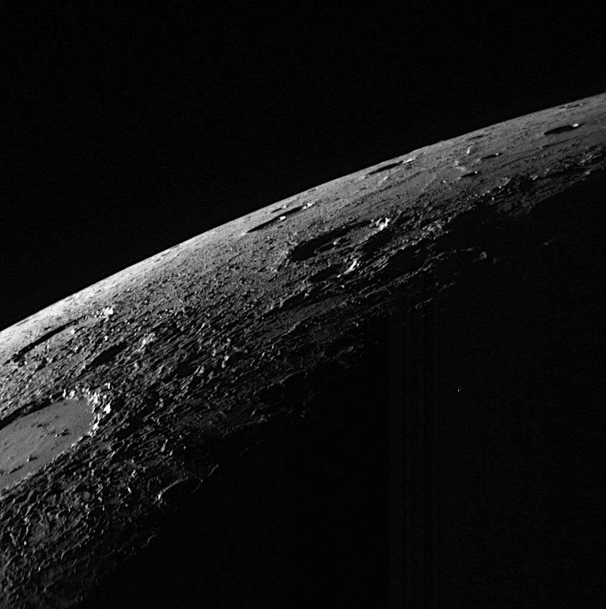
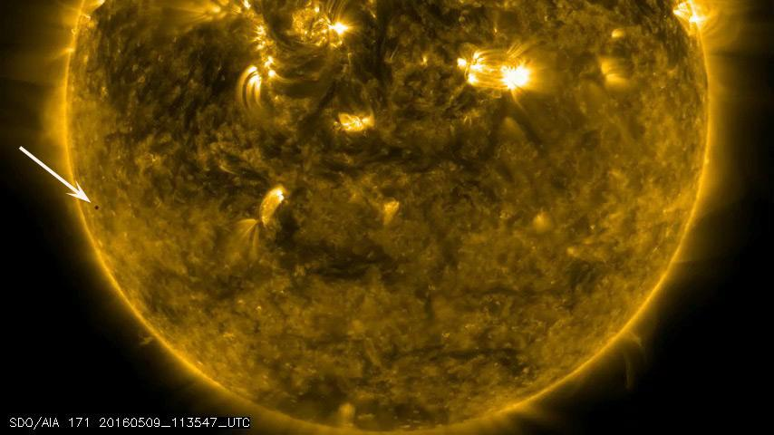

Mercury is the smallest planet in our solar system and nearest to the Sun. It's only slightly larger than Earth's Moon. From the surface of Mercury, the Sun would appear more than three times as large as it does when viewed from Earth, and the sunlight would be as much as seven times brighter.


Our Sun is a medium-sized star with a radius of about 435,000 miles (700,000 kilometers). Many stars are much larger – but the Sun is far more massive than our home planet: it would take more than 330,000 Earths to match the mass of the Sun, and it would take 1.3 million Earths to fill the Sun's volume. The Sun is about 93 million miles (150 million kilometers) from Earth. Its nearest stellar neighbor is the Alpha Centauri triple star system: red dwarf star Proxima Centauri is 4.24 light-years away, and Alpha Centauri A and B – two sunlike stars orbiting each other – are 4.37 light-years away. A light-year is the distance light travels in one year, which equals about 6 trillion miles (9.5 trillion kilometers).
The Sun is located in the Milky Way galaxy in a spiral arm called the Orion Spur that extends outward from the Sagittarius arm. The Sun orbits the center of the Milky Way, bringing with it the planets, asteroids, comets, and other objects in our solar system. Our solar system is moving with an average velocity of 450,000 miles per hour (720,000 kilometers per hour). But even at this speed, it takes about 230 million years for the Sun to make one complete trip around the Milky Way. The Sun rotates on its axis as it revolves around the galaxy. Its spin has a tilt of 7.25 degrees with respect to the plane of the planets’ orbits. Since the Sun is not solid, different parts rotate at different rates. At the equator, the Sun spins around once about every 25 Earth days, but at its poles, the Sun rotates once on its axis every 36 Earth days.
The Sun formed about 4.6 billion years ago in a giant, spinning cloud of gas and dust called the solar nebula. As the nebula collapsed under its own gravity, it spun faster and flattened into a disk. Most of the nebula's material was pulled toward the center to form our Sun, which accounts for 99.8% of our solar system’s mass. Much of the remaining material formed the planets and other objects that now orbit the Sun. (The rest of the leftover gas and dust was blown away by the young Sun's early solar wind.) Like all stars, our Sun will eventually run out of energy. When it starts to die, the Sun will expand into a red giant star, becoming so large that it will engulf Mercury and Venus, and possibly Earth as well. Scientists predict the Sun is a little less than halfway through its lifetime and will last another 5 billion years or so before it becomes a white dwarf.
Mercury is the second densest planet, after Earth. It has a large metallic core with a radius of about 1,289 miles (2,074 kilometers), about 85% of the planet's radius. There is evidence that it is partly molten or liquid. Mercury's outer shell, comparable to Earth's outer shell (called the mantle and crust), is only about 400 kilometers (250 miles) thick.
The Sun doesn’t have a solid surface like Earth and the other rocky planets and moons. The part of the Sun commonly called its surface is the photosphere. The word photosphere means "light sphere" – which is apt because this is the layer that emits the most visible light. It’s what we see from Earth with our eyes. (Hopefully, it goes without saying – but never look directly at the Sun without protecting your eyes.) Although we call it the surface, the photosphere is actually the first layer of the solar atmosphere. It's about 250 miles thick, with temperatures reaching about 10,000 degrees Fahrenheit (5,500 degrees Celsius). That's much cooler than the blazing core, but it's still hot enough to make carbon – like diamonds and graphite – not just melt, but boil. Most of the Sun's radiation escapes outward from the photosphere into space.
Above the photosphere is the chromosphere, the transition zone, and the corona. Not all scientists refer to the transition zone as its own region – it is simply the thin layer where the chromosphere rapidly heats and becomes the corona. The photosphere, chromosphere, and corona are all part of the Sun’s atmosphere. (The corona is sometimes casually referred to as “the Sun’s atmosphere,” but it is actually the Sun’s upper atmosphere.) Visible light from these top regions of the Sun is usually too weak to be seen against the brighter photosphere, but during total solar eclipses, when the Moon covers the photosphere, the chromosphere looks like a fine, red rim around the Sun, while the corona forms a beautiful white crown ("corona" means crown in Latin and Spanish) with plasma streamers narrowing outward, forming shapes that look like flower petals. In one of the Sun’s biggest mysteries, the corona is much hotter than the layers immediately below it. (Imagine walking away from a bonfire only to get warmer.) The source of coronal heating is a major unsolved puzzle in the study of the Sun.
The Sun generates magnetic fields that extend out into space to form the interplanetary magnetic field – the magnetic field that pervades our solar system. The field is carried through the solar system by the solar wind – a stream of electrically charged gas blowing outward from the Sun in all directions. The vast bubble of space dominated by the Sun’s magnetic field is called the heliosphere. Since the Sun rotates, the magnetic field spins out into a large rotating spiral, known as the Parker spiral. This spiral has a shape something like the pattern of water from a rotating garden sprinkler. The Sun doesn't behave the same way all the time. It goes through phases of high and low activity, which make up the solar cycle. Approximately every 11 years, the Sun’s geographic poles change their magnetic polarity – that is, the north and south magnetic poles swap. During this cycle, the Sun's photosphere, chromosphere, and corona change from quiet and calm to violently active. The height of the Sun’s activity cycle, known as solar maximum, is a time of greatly increased solar storm activity. Sunspots, eruptions called solar flares, and coronal mass ejections are common at solar maximum. The latest solar cycle – Solar Cycle 25 – started in December 2019 when solar minimum occurred, according to the Solar Cycle 25 Prediction Panel, an international group of experts co-sponsored by NASA and NOAA. Scientists now expect the Sun’s activity to ramp up toward the next predicted maximum in July 2025. Solar activity can release huge amounts of energy and particles, some of which impact us here on Earth. Much like weather on Earth, conditions in space – known as space weather – are always changing with the Sun’s activity. "Space weather" can interfere with satellites, GPS, and radio communications. It also can cripple power grids, and corrode pipelines that carry oil and gas.
https://science.nasa.gov/mercury/facts/